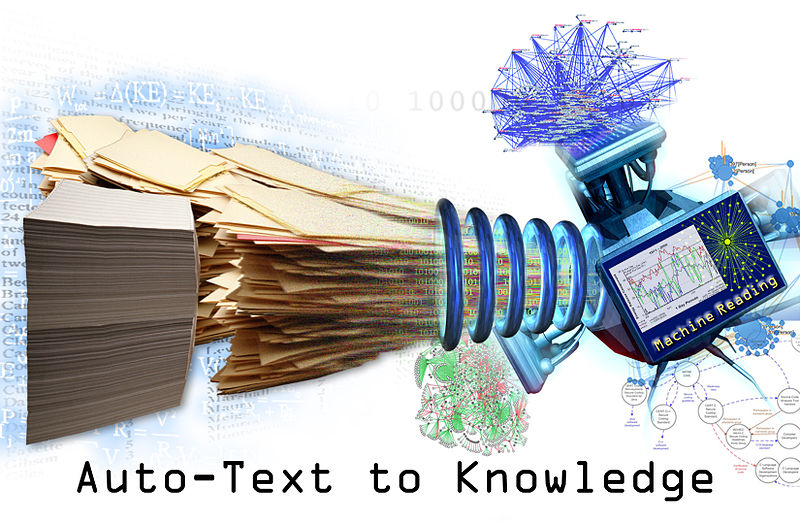

|
Encyclopedic knowledge bases (KBs) such as Wikipedia and Freebase form the underlying intelligence behind Google’s Knowledge Graph, Facebook’s Graph Search, IBM’s Watson and more. These broad-coverage databases contain facts about entities, for example a person’s employer or a city’s mayor. While today’s KBs have good coverage for popular entities, little structured information is available for less prominent entities, suggesting the need for information extraction from large unstructured and semi-structured data sources found on the Web. The course will involve reading and discussing recent papers from top conferences in the field. Students will propose and complete an open-ended course project; example projects might include anything from extracting relations from HTML tables on the web to event extraction from news or social media text. Previous experience with natural language processing and/or machine learning will be very helpful. |
 |
Grading will be based on 2 components:
| Date | Topic | Reading |
|---|---|---|
| 8/25 | Course Overview | No Reading |
| 8/27 | Please fill out the Paper Selection Form before class Relation Extraction (Alan will present) - Useful videos: 1 2 3 4 | Knowledge-Based Weak Supervision for Information Extraction of Overlapping Relations, Raphael Hoffmann, Congle Zhang, Xiao Ling, Luke Zettlemoyer, Daniel S. Weld, ACL 2011 |
| Please See the course schedule spreadsheet for reading and presentation assignments. Feel free to email the instructor for the link in case you did not recieve it by email. |